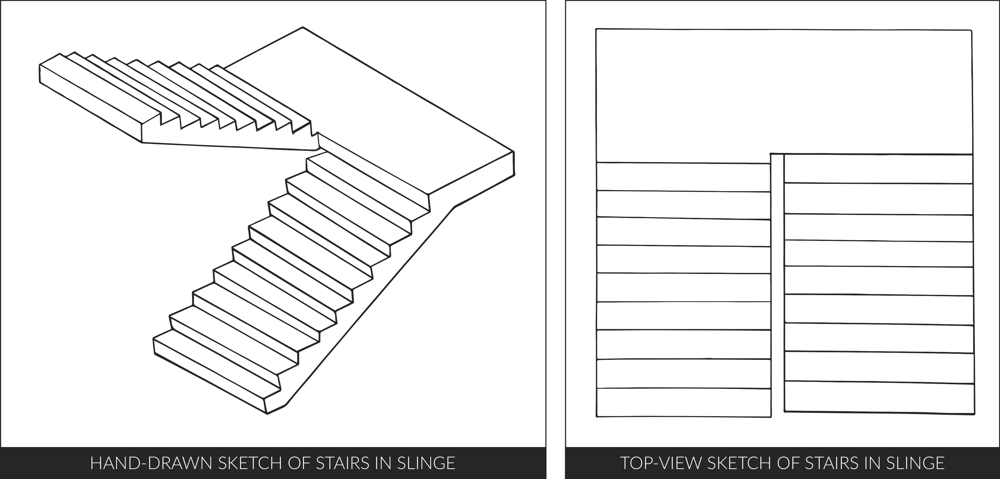
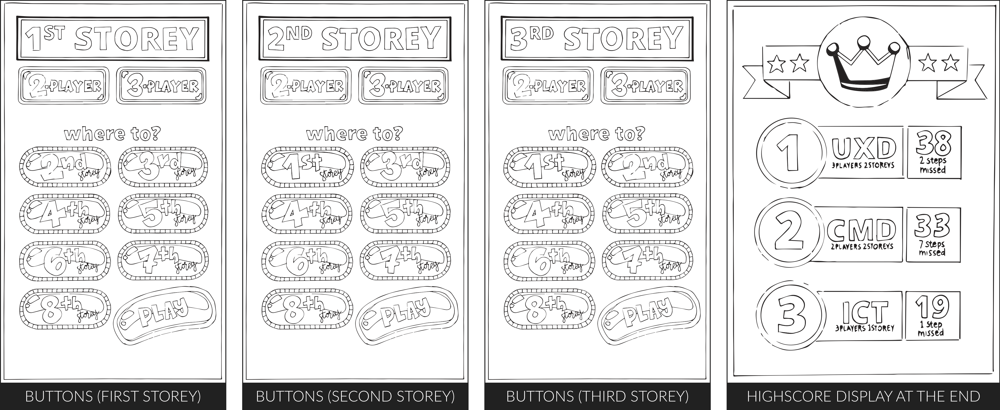

Playful Interactions Assignment
In the lecture, the various types of play modus as well as the possibilities of playful interactions were discussed. Playful interactions have the potential to change behaviours and influence others positively in the world around us. As such, we were tasked with the assignment of coming up with a new concept for a social playful interface to encourage positive behaviour within the main THUAS building.
— ★ —
CONCEPT
The positive behaviour I wish to invoke is encouraging individuals that are repulsed by the idea of taking stairs instead of the lift. As I myself am a strong advocate of this aversion, I started pondering over what kind of playful interaction would have the best chance of edging me towards the using of stairs. Firstly, there should be others along the ride as habits are hard to form and more likely to succeed with support. Subsequently, as it is support that I am aiming for, it made more sense that it is a cooperative game first and foremost. However, a competitive aspect can possibly come into play between faculties or courses.

The concept I settled on is game that can be incorporated into any stairwell other than the three open ones as it would hinder traffic flow. It involves installing a panel at each of the storeys of the building with buttons for choosing between 2 or 3 players and to which storey would one like to engage in. The accompanying play button sets the projection and sensors in motion. The objective is for all players to step onto the indicated spots on each step at the same time. If it is done in synchronism, the level will be green and a pleasant sound feedback will follow. If not, the step will turn red and a disruptive sound feedback will alert the players. To make sure that this does not hold up others too much as well as to make it more challenging, there is a time limit of 5 seconds before the next step is forfeited. At the end of the journey, there will be the highscores projected. If the players manage to claim a spot in the high score, their new entry will be included with 3 letters of choice.
INTERACTION
THERE ARE ESSENTIALLY THREE MAIN INTERACTIONS:

ONE. (shown above) panel with a simple interface of buttons located on each storey, mapping out the number of players and flights of stairs in play before projection begins at the press of the 'play' button.
TWO. (shown below) players (2 or 3) have to step on the allocated spots in synchronization and there is a 5seconds limit between steps before it is automatically forfeited. There is feedback on the success (or lack of) for each step through colour and sound. For instance, it could be along the lines of green for success and red otherwise as well as a melody unless interrupted by the off-key sound of failure.
THREE. (shown above) display of existing highscores. Upon managing to break into the highscore board, the option of inputting three letters of choice will be provided.
PRODUCT
 TYPE OF PLAY MODUS
TYPE OF PLAY MODUS
⋆ multiplayer and cooperative ⋆
play exists on the possibility of 2 to 3 players. While its main aim is to be cooperative with other players, there is a slight element of competition with the inclusion of a highscore display at the end.
⋆ parallel and interdependent exertion ⋆
players have to mimic each other's actions which is possible as they are aware of each other's actions. Players then use a shared space and their bodies to act interdependently.
HOW WILL IT WORK TECHNICALLY
INPUT TECHNOLOGY: There are buttons used to input the parameters of the projection such as the number of allocated slots on each step (2 or 3) and the scope of the space involved (number of flights of stairs) before starting the projection and game. Subsequently, touch sensors will be used to cover the area of the 5 spots on each step. More specifically, pressure sensors to know when it is stepped on or not. It works like that of buttons, just on a larger surface area. Once they are all pressed together, the system deems it as a success (similar to the concept of the Arduino Manual v5.0 exercise 10F).
OUTPUT TECHNOLOGY: Projection, display, lights and sound. With the button panel at the start, the buttons light up to show the players their choice. For example, when you press '2-player' and '3rd storey), the corresponding buttons light up followed by a blinking 'play' button (indicating ability to start). Projection of the gamification then starts. As it is ongoing, steps change background colour (two options) and sound feedback (two options) based on whether it was successful or not. At the end, when the last step's outcome is computed, there is a display (could also be a projection) of high score and the option to input three letters if new highscore is attained.
CLOSE ASSIGNMENT


 Playful interactions, in this context, essentially involves the fun theory. Put simply, if you want to get people to change their behaviour, make what you want them to do novel and fun. The Fun Theory was an initiative of Volkswagen in 2009-2010 that was meant to acknowledge the thoughts, ideas and inventions that “proved” fun is the easiest way of changing behavior for the better.
Playful interactions, in this context, essentially involves the fun theory. Put simply, if you want to get people to change their behaviour, make what you want them to do novel and fun. The Fun Theory was an initiative of Volkswagen in 2009-2010 that was meant to acknowledge the thoughts, ideas and inventions that “proved” fun is the easiest way of changing behavior for the better.